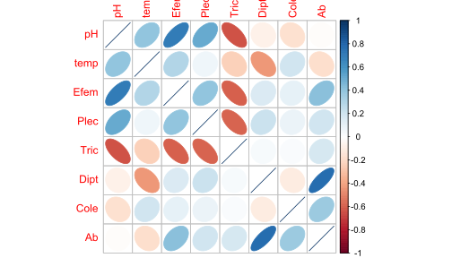
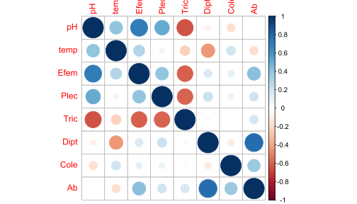
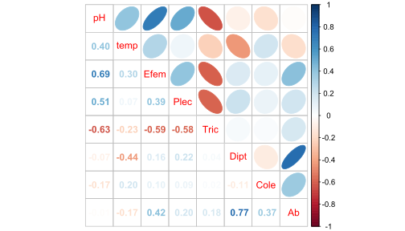
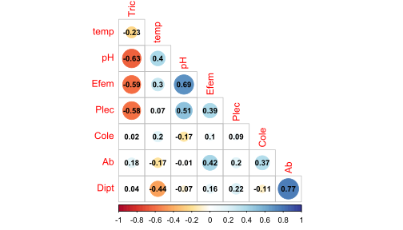

# Librerías requeridas
library(tidyverse)
library(xtable) # Importar y exportar
library(openxlsx) # exportar "*.xlsx"
library(readxl) # Importar y exportar
library(stats) # Para las figuras de pares
library(lattice) # No se requiere instalar
library(ggplot2) # gráfica en ggplot2
library(ggrepel) # insertar rótulos a los puntos
require(SciViews) # Fig. dispersión con coef. de pearson
library(plotrix) # Figuras de cajas con múltiples variables
library(reshape) # Figuras de cajas con múltiples variables
library(corrplot) # Figuras de elipsesTaller 3. Exploración Multivariada - Insectos
Exploración gráfica multivariada - base Insectos
Objetivo de la actividad:
Poner en práctica el manejo de bases de datos y la visualización de datos uni, bi, tri y multivariados, para responder principalmente a dos tipos de objetivos:
Relaciones entre variables biológicas y de estas con las ambientales (ej. figuras de elipses, pares, dispersión y coplot).
Diferencias para el caso en el que contemos con variables agrupadoras (factores o v. cualitativas), orientado a evaluar las diferencias entre variables biológicas en gradientes espaciales o temporales (ej. entre grupos de sitios).
La base de datos a utilizar se presenta en dos formatos: Insectos.csv e Insectos.xlsx. Esta base cuenta con 2 variables ambientales y 6 biológicas, así como con un factor o variable agrupadora (cuencas), todo esto distribuido en las columnas. Además cuenta con y 20 localidades o quebradas (filas).
Procedimiento de la exploración
Cargar librerías requeridas
Cargar la base
Insectos(usar diferentes opciones para practicar)Explorar al objetivo 1 (figuras de elipses, pares, dispersión y coplot).
Explorar al objetivo 2 (figuras de elipses, pares, dispersión y coplot).
Realizar las opciones gráficas relacionadas a los objetivos.
Realizar transformaciones de los datos, para mejorar la visualización de patrones.
Practicar con leyendas y resultados de la visualización realizada.
Cargar las librerías requeridas
Nota: ggcorrplot2 requiere instalarse de la siguiente manera, debido a que está en proceso de ajuste para las nuevas plataformas de R. ver_enlace_procedimiento
# Instalar "ggcorrplot2", solo por una vez
install.packages("remotes")
remotes::install_github("caijun/ggcorrplot2")- Nota:
gganimaterequiere instalarse de la siguiente manera: ver_enlace_procedimiento
install.packages('gganimate')
devtools::install_github('thomasp85/gganimate')
Cargar o importar la base de datos
#------------
datos <- read.csv2("Insectos.csv") # paquete "utils"
head(datos) quebrada cuenca pH temp Efem Plec Tric Dipt Cole Ab
1 1 cuen1 6.8 17.4 26 4 9 30 3 72
2 4 cuen1 7.3 16.8 17 6 9 25 1 58
3 11 cuen1 5.6 16.0 9 3 28 24 3 67
4 13 cuen1 6.3 17.8 2 3 25 21 6 57
5 19 cuen1 5.6 18.2 6 4 24 12 13 59
6 3 cuen2 6.3 17.0 7 2 25 10 1 45
1. Figuras de elipses
El Paquete corrplot es el que permite realizar las opciones gráficas de elipses a color, ingresar a este enlace:
Otro enlace a corrplot:
#---
# 1. Elipses
library(corrplot)
# Elipses con colores
M <- cor(datos[,3:10]) # Matriz de Correlación (M)
round(head(M),2) pH temp Efem Plec Tric Dipt Cole Ab
pH 1.00 0.40 0.69 0.51 -0.63 -0.07 -0.17 -0.01
temp 0.40 1.00 0.30 0.07 -0.23 -0.44 0.20 -0.17
Efem 0.69 0.30 1.00 0.39 -0.59 0.16 0.10 0.42
Plec 0.51 0.07 0.39 1.00 -0.58 0.22 0.09 0.20
Tric -0.63 -0.23 -0.59 -0.58 1.00 0.04 0.02 0.18
Dipt -0.07 -0.44 0.16 0.22 0.04 1.00 -0.11 0.77La Figura 1 muestra la relación entre las variables, a partir de figuras de elipses.
x11() # Panel gráfico adicional
corrplot(M, method = "ellipse") # Figura de correlaciones con elipses
La Figura 2 muestra la relación entre las variables, a partir de figuras de círculos de colores.
X11()
corrplot(M, method = "circle") # Figura de correlaciones con circulos
La Figura 3 muestra la relación entre las variables, a partir de figuras de elipses y coeficientes de correlación de Pearson.
X11()
corrplot.mixed(M, upper="ellipse") # Figura con coeficientes de correlación
La Figura 4 otra forma de mostrar la relación entre las variables, a partir de figuras de elipses y coeficientes de correlación de Pearson.
x11()
corrplot(M, method = "circle", # Correlaciones con circulos
type = "lower", insig="blank", # Forma del panel
order = "AOE", diag = FALSE, # Ordenar por nivel de correlación
addCoef.col ="black", # Color de los coeficientes
number.cex = 0.8, # Tamaño del texto
col = COL2("RdYlBu", 200)) # Transparencia de los circulos